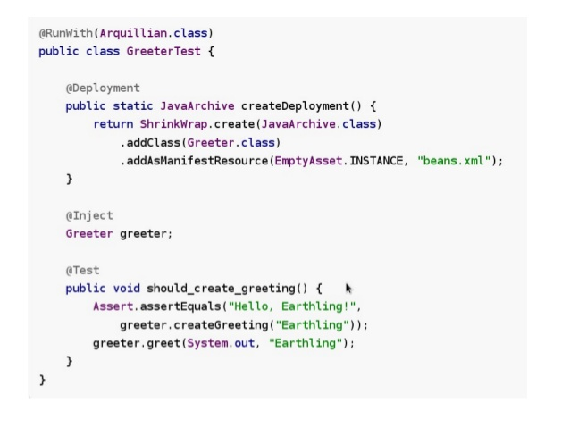

Java EE In-Container Testing
com Arquillian
Apresentação por

Rafael Pestano
Desenvolvedor Java
Procergs
Agenda
- Tipos de teste
- Introdução ao Arquillian
- Hands on(taca-le pau)
fontes disponíveis em
Tipos de teste

Tipos de teste

Introduçao ao Arquillian

Introduçao ao Arquillian
- testes de integração tão fáceis quanto unitários
- leva o teste para o "runtime"
- mesmo teste deve rodar em multiplos containers
- injeção de dependência nos testes(test enrichers)
- micro deployments (evita build e isola componentes)
- gerencia o container
Introduçao ao Arquillian

Ciclo de vida dos testes

Ciclo de vida dos testes

Ciclo de vida dos testes

Ciclo de vida dos testes

Ciclo de vida dos testes

Hands on!

Obrigado a todos!